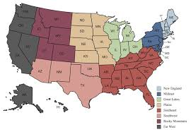
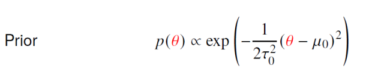
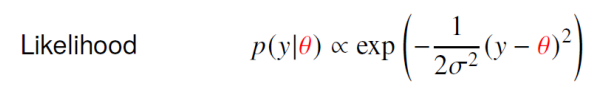
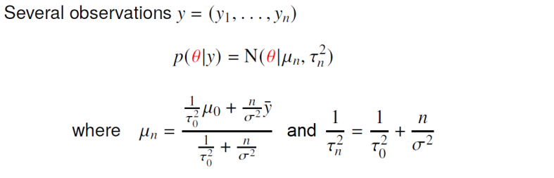
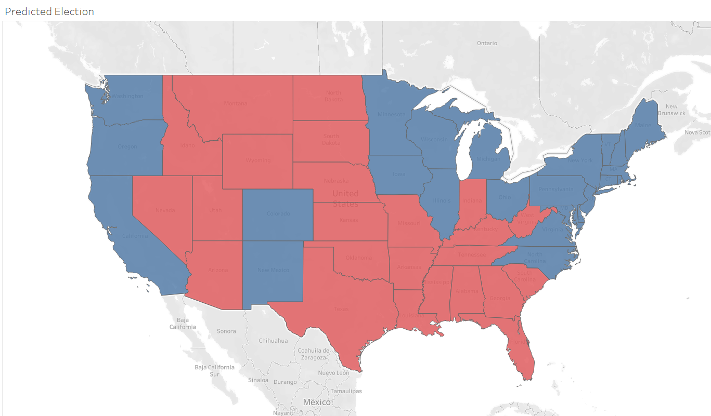

ABSTRACT
With the 2024 Presidential Election approaching, polling data from the 2016 Presidential Election was utilized to create a posterior estimate of every state’s (including D.C.) popular voting pattern to try to predict the electoral college voting and determine who would win the election. One-thousand simulation draws from these posterior densities were able to correctly predict 86.5% of the region voting that was to occur during the actual election (with a final singular vote accuracy of 86.2%); which, when paired with the electoral votes for each state, was unable to predict Donald Trump’s defeat over Hillary Clinton that year.
INTRODUCTION
Every four years the United States Presidential Election sweeps the nation to discover who will be the country’s new Chief Executive. Although the U.S. is a democratic country, it is subject to a unique system known as the Electoral College. In simple terms, candidates compete in each state (and the capital region) by popular vote to obtain that state’s specific number of electoral votes that is determined by its population. Therefore, some states are worth more than other states for candidates to win and requires strategic campaigning of specific states to obtain enough electoral votes to be the victor. Because this system is unique, predicting who will win the Presidency is no easy task – simple polling of the general public does not clearly paint a picture of who is favored because the overall popular vote means nothing.
The election of 2016 is particularly interesting because the two lead candidates (Donald Trump and Hillary Clinton) were extremely polarizing and led to unique voting patterns. Voters seemed to either aggressively align with one of the two major parties, would vote to choose the lesser of the two polarizing figures, or settle voting on a smaller party candidate. To display just how difficult prediction was during this pattern, major polling sources like FiveThreeEight, the Upshot, 270toWin, the Princeton Election Consortium, the Associated Press, and many other sources incorrectly predicted that Hillary Clinton would be victorious.
METHODS
This analysis was centered from Nate Silver’s:FiveThirtyEight “2016 Election Polls” dataset on Kaggle and eventually paired with David Ward’s “US Electoral College Votes Per State 1788-2020” on Kaggle for Electoral Voting attributes. All data collected was from national polls conducted from November 2015 to November 2016 – the year leading up to the election. Only data with raw polling data with credible polling grades of “B” or above were considered by the analysis. It was assumed that participants would not change their minds from the time of the poll and that each poll maintained a solid spread of each state’s constituency. Additionally, because of the lack of diversity in the Presidency’s usual party, only the two major parties were considered (Republican Donald Trump and Democrat Hillary Clinton). Multi-region polls from the same state were condensed and all national polls that took results from a national census that was not state specific were excluded. Additionally, each candidate was assumed to have a normal prior distribution of backing from the polls as well as a normal likelihood for being voted for by voters in that state.
With similar idea to Brittany Alexander’s Bayesian Model for the Prediction of the U.S. Presidential Elections, the 2016 election was analyzed using each state’s conjugate normal prior distribution was taken from a specific region of the United States that the state fell into that excluded their own state. This assumes that states in similar geographical areas tend to exhibit similar voting patterns. The regions were separated according to the following image:

Where, for instance, if Texas was taken, the prior mean and variance would be taken from the samples of the rest of the Southwest Region (Arizona, New Mexico, and Oklahoma). Because mean and variance are known, our normal conjugate prior would be:

And the normal likelihood function would be:

Thus, with a normal likelihood and a normal prior, our conjugate normal posterior for several observations of y, would be modeled by:

After the data was cleaned and normalized between the two primary candidates, a posterior distribution for each candidate in each state was generated by 10,000 simulated values and was plotted using RStudio. From these 10,000 simulated values, 1,000 values were randomly drawn, normalized, and then used to predict the percent of the vote each candidate received from the election for each state. These simulations then were used to predict a singular outcome by counting if one candidate received over 500 decisions of the 1,000 samples. The winner of each state was then awarded that state’s electoral college votes to predict who would win the 2016 Presidential Election by having a greater sum of votes. Complete accuracy of the simulations was also recorded on a simulation by simulation basis.
RESULTS/DISCUSSION
From the 10,000 posterior draws for each state for each candidate, the total accuracy of the voting outcome on a sample by sample basis turned out to be 86.5% – which when aggregated into singular state votes lowered just slightly to 86.2% and resulted in the following electoral college voting simulation:

The predicted model struggled significantly in the “Great Lakes”/”Mideast” region which coincidentally lies in many swing states from this election: meaning that these states were battlegrounds that resulted in a difficult and polarized consensus on how constituents would vote. Some swing states like Colorado, Florida, Minnesota, New Hampshire, and Virginia were predicted correctly; however, others like Michigan, Ohio, Iowa, Pennsylvania, and North Carolina were not. Thus, while the model had a high accuracy rate of 86.2% it ultimately struggled to predict swing states in the Midwest United States. Future analyses would be wise to make several changes with this information. First, as mentioned, obtaining different prior distributions due to the volatility of swing states may have been useful. Additionally, accounting for all major candidates (Hillary Clinton, Donald Trump, Gary Johnson, and Evan McMullin) was ignored and while the two major parties dominated, according to FiveThreeEight, Gary Johnson was predicted to command about 5.0% of the popular vote. Normalizing candidates may have harmed this distribution as it is not known how pollees would vote if they had to choose for a candidate other than Johnson. Lastly, utilizing poll data from FiveThreeEight may have also been misinformed. While the organization is well known for their election forecasts, they also incorrectly predicted the outcome of the election.
Posterior distributions for each state for both candidates are shown in the appendix. Hillary Clinton’s distribution is blue, Donald Trump’s distribution is red. For personal observation or reproduction, all code for analysis has been stored inside of brandonowens24’s GitHub repository labeled: “Simple Bayesian Inference on Electoral College Voting”.